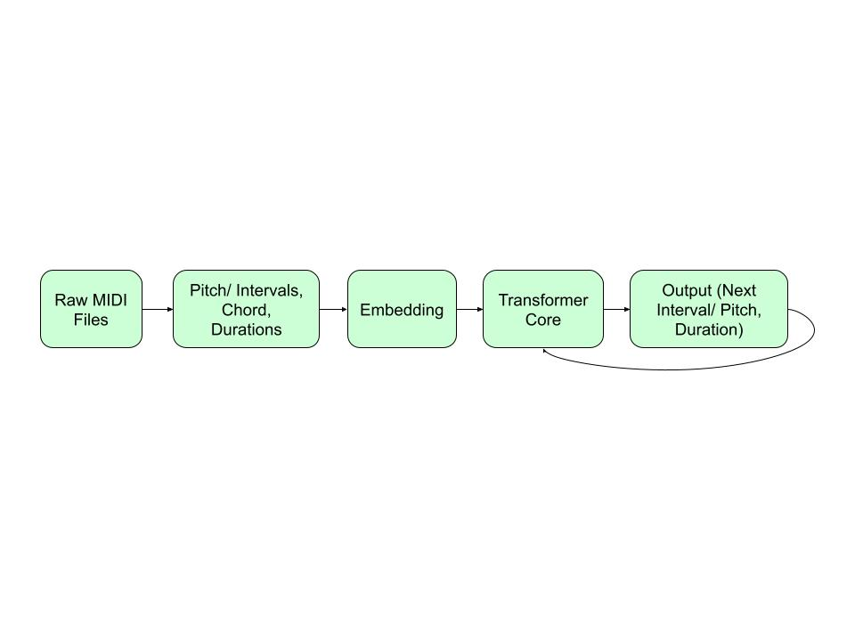
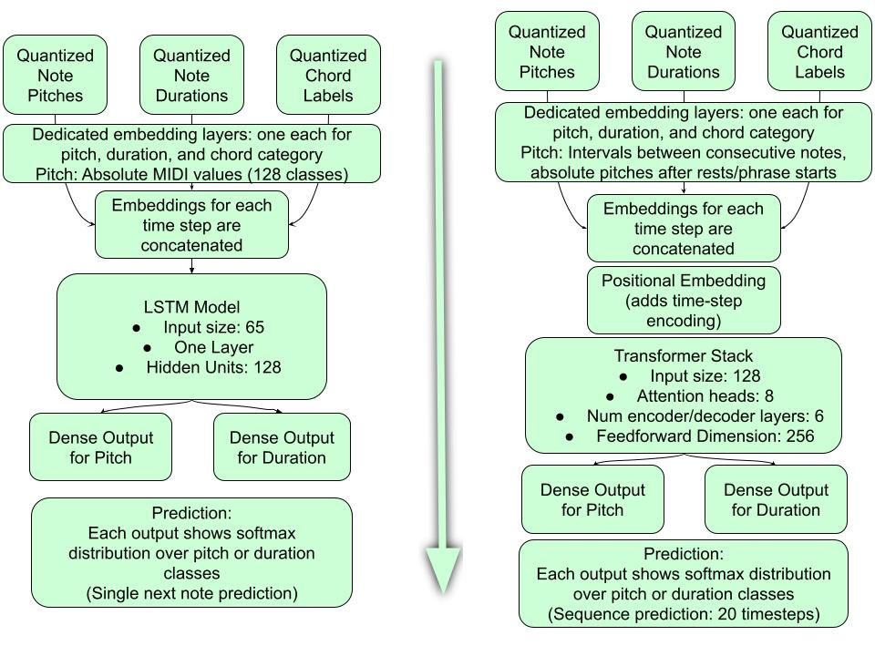
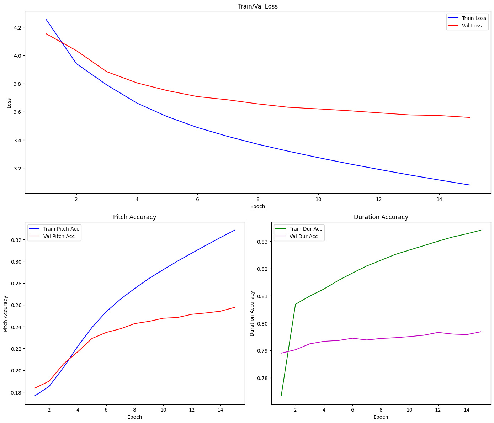

Developed a Transformer-based neural network to generate jazz melodies conditioned on chord progressions. The model learns from MIDI data to create musically coherent solos that respect harmonic structure.
Algorithmic music generation has traditionally relied on rule-based systems that lack the creative flexibility of human musicians. The challenge was to develop a system that could:
Built a comprehensive MIDI processing pipeline that:
def fast_chord_labels_named(path, window=0.5, step=0.5):
midi = pretty_midi.PrettyMIDI(path)
notes = [n for inst in midi.instruments if not inst.is_drum for n in inst.notes]
notes.sort(key=lambda n: n.start)
chords = []
t = 0.0
while t < max_time:
active = [n for n in notes if not (n.end < start_w or n.start > end_w)]
if len(active) >= 2:
pcs = sorted(set(n.pitch % 12 for n in active))
chord_label = "-".join(str(pc) for pc in pcs)
else:
chord_label = "N"
chords.append((t, chord_label))
t += step
return chordsImplemented a custom Transformer architecture with:

Block diagrams comparing the baseline LSTM model (left) and the primary Transformer model (right) for melody generation
The model was trained for 15 epochs using:

Training and validation metrics over 15 epochs
24.69%
Pitch Accuracy
81.38%
Duration Accuracy
Listen to melodies generated over standard jazz progressions:
Am7 - D7 - Gmaj7 - Cmaj7 - F#m7 - B7 - Em - Em
Dm7 - G7 - Cmaj7 - A7
The model uses a hybrid approach combining absolute pitches (after rests) and relative intervals (between consecutive notes). This reduces vocabulary size while maintaining melodic contour information.
Implemented custom mask generation to ensure autoregressive properties:
def generate_square_subsequent_mask(self, sz):
mask = (torch.triu(torch.ones(sz, sz)) == 1).transpose(0, 1)
mask = mask.float().masked_fill(mask == 0, float('-inf'))
return maskTo prevent excessive rests, a penalty factor (7.0) is applied to rest token logits during sampling, encouraging more continuous melodic lines.
Problem: Interval accumulation caused pitches to exceed MIDI range (0-127)
Solution: Implemented clamping to keep pitches between C0 (21) and C8 (108) during generation
Problem: Only 40% of timesteps had recognizable chord labels
Solution: Filtered dataset to retain only notes with valid chord annotations, improving training signal
Problem: Generated melodies exceeded chord progression duration
Solution: Implemented time-tracking during generation with early stopping when target duration is reached
For complete technical details, mathematical derivations, and additional analysis, download the full research paper: